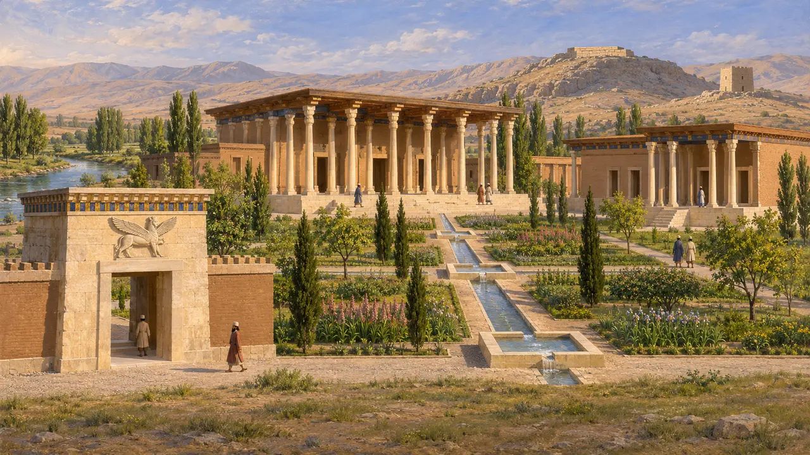
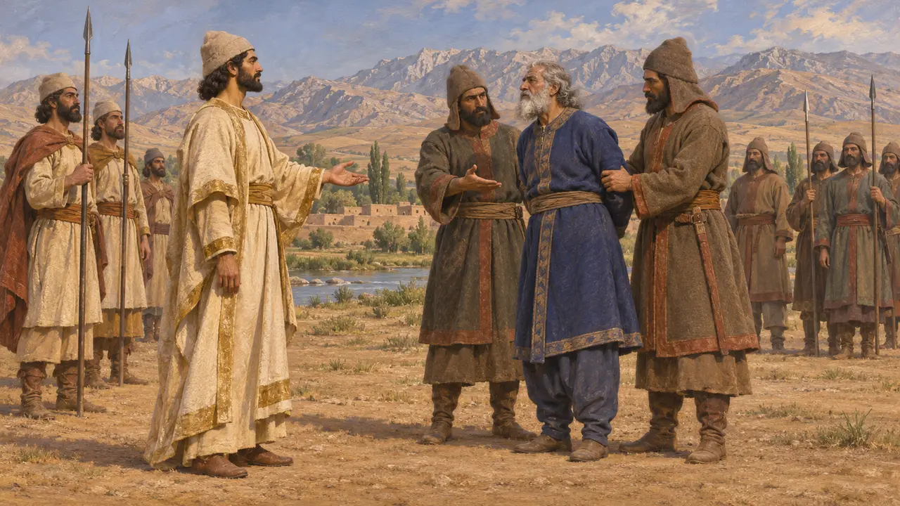
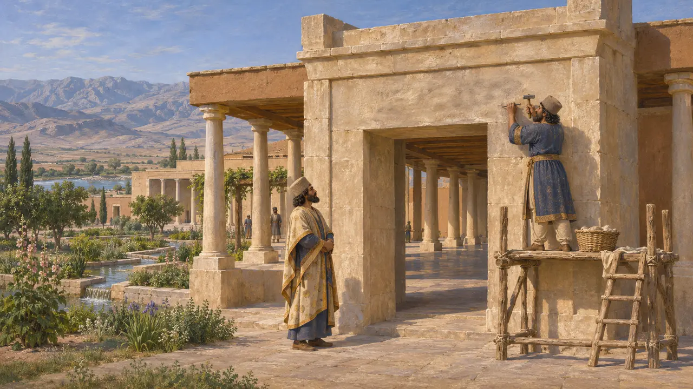
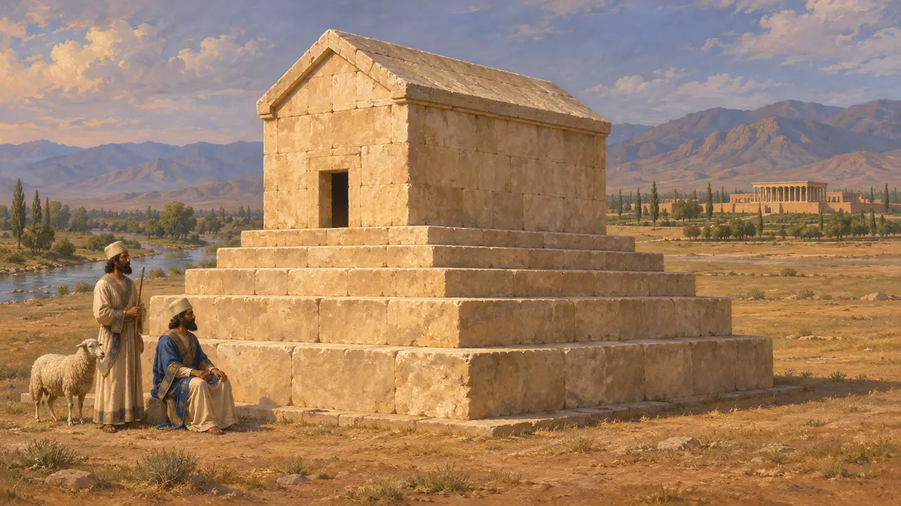
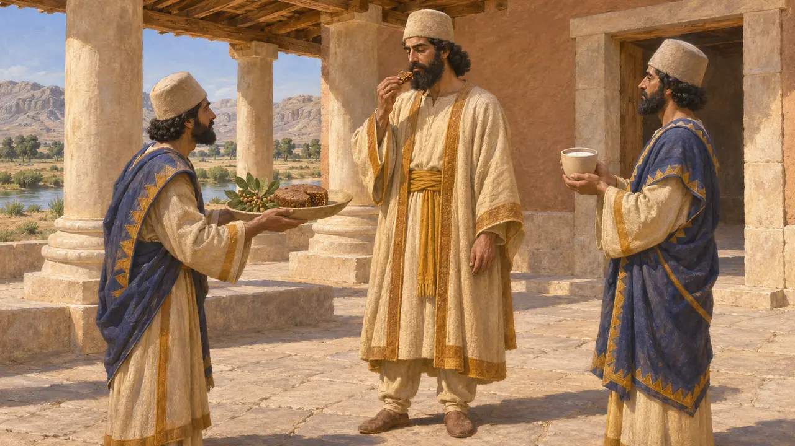

Pasargades
Résidence royale de Cyrus au bord du Pulvar, en Perside, bâtie vers 550-530 av. J.-C.
Dans le jeu : Niveau 1 : Le Tombeau du fondateur
Pasargades était la résidence royale que Cyrus le Grand bâtit sur un haut plateau de Perside, au bord du Pulvar, après avoir renversé le roi mède Astyage. Ce fut le premier grand chantier achéménide : des palais de pierre disséminés parmi des jardins, plutôt qu'une ville close de murs et quadrillée de rues. Cyrus y fut inhumé, et un auteur grec plus tardif rapporte que les nouveaux rois venaient encore s'y faire introniser.
Dans le jeu : Le premier niveau se déroule ici en 530 av. J.-C., parmi des palais, un pavillon d'entrée et des jardins clos de murs irrigués par des conduites de pierre. Le jeu suit Strabon en situant la cité sur le champ de bataille de Cyrus, ce que la chronique babylonienne ne confirme pas.

Des palais parmi les jardins
Dans les sourcesLes fouilles, surtout celles de David Stronach en 1961-1963, ont mis au jour un pavillon d'entrée (Porte R) orné du relief d'un génie gardien à quatre ailes, une salle d'audience à hautes colonnes (Palais S) et un palais résidentiel (Palais P). Entre eux couraient des conduites d'eau taillées dans le calcaire, ponctuées de petits bassins carrés. Une plateforme de pierre, le Tall-e Takht, s'élève sur une colline au nord, et un mur d'une tour de pierre carrée, le Zendan-e Soleyman, se dresse encore non loin.
D. Stronach, Pasargadae, 1978

Là où Cyrus vainquit les Mèdes
ContestéSelon Strabon, Cyrus honora Pasargades parce qu'il y remporta sa dernière bataille contre Astyage et y bâtit son palais. La Chronique de Nabonide, rédigée à Babylone, rapporte au contraire que les propres troupes d'Astyage se révoltèrent, s'emparèrent de lui et le livrèrent à Cyrus, qui prit ensuite Ecbatane ; elle ne nomme aucun champ de bataille. Hérodote donne Pasargades comme le nom de la principale tribu perse : le lieu pourrait donc simplement avoir été le territoire de cette tribu.
Strabo 15.3.8; Nabonidus Chronicle; Herodotus 1.125

Doutes sur les inscriptions et les jardins
ContestéDe courts textes en vieux perse, en élamite et en babylonien, gravés sur les portes du palais, désignent Cyrus comme roi et Achéménide. Beaucoup d'historiens pensent qu'ils furent ajoutés sous Darius, qui affirme avoir introduit une nouvelle forme d'écriture, afin de rattacher sa propre lignée à Cyrus. D'autres soutiennent que certains furent gravés du vivant de Cyrus. Le plan de jardin quadripartite si régulier proposé par Stronach a lui aussi été remis en question par des prospections ultérieures sur le site.
CMa; DB §70; D. Stronach, Pasargadae, 1978

Le tombeau de Cyrus
Récit antiqueLe tombeau se dresse toujours au sud-ouest des palais : une chambre de pierre à toit à pignon posée sur six assises en gradins. Arrien, s'appuyant sur Aristobule, dit qu'il renfermait une couche et un sarcophage d'or. Il ajoute qu'il était gardé par des mages qui recevaient chaque jour un mouton et chaque mois un cheval pour le sacrifice. Il rapporte qu'Alexandre le trouva pillé à son retour de l'Inde, vers 324, et ordonna à Aristobule de le restaurer.
Arrian, Anabasis 6.29; Strabo 15.3.7

Là où l'on faisait les rois
Récit antiquePlutarque, qui écrit vers 100 apr. J.-C., rapporte que chaque nouveau roi perse se rendait au sanctuaire d'une déesse guerrière à Pasargades. Il y revêtait la robe que Cyrus portait avant de devenir roi, mangeait un gâteau de figues, mâchait du térébinthe et buvait du lait aigre. Plutarque raconte cela à propos d'Artaxerxès II en 404 av. J.-C. : il décrit donc une pratique tardive, mise par écrit cinq siècles plus tard. Le récit montre néanmoins que Pasargades demeura le siège de la mémoire de Cyrus bien après que Darius eut bâti Persépolis.
Plutarch, Artaxerxes 3
Sources
- D. Stronach, Pasargadae, 1978
- Strabo 15.3.7-8
- Arrian, Anabasis 6.29
- Nabonidus Chronicle
- Plutarch, Artaxerxes 3
- P. Briant, From Cyrus to Alexander, 2002